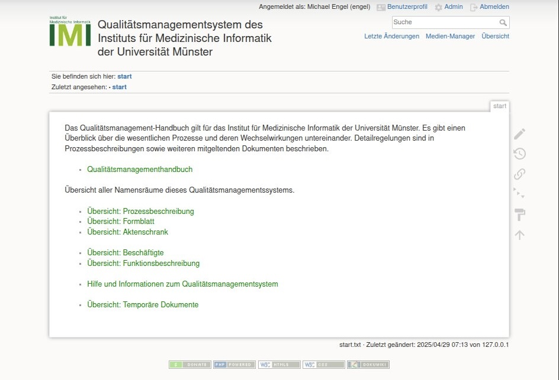
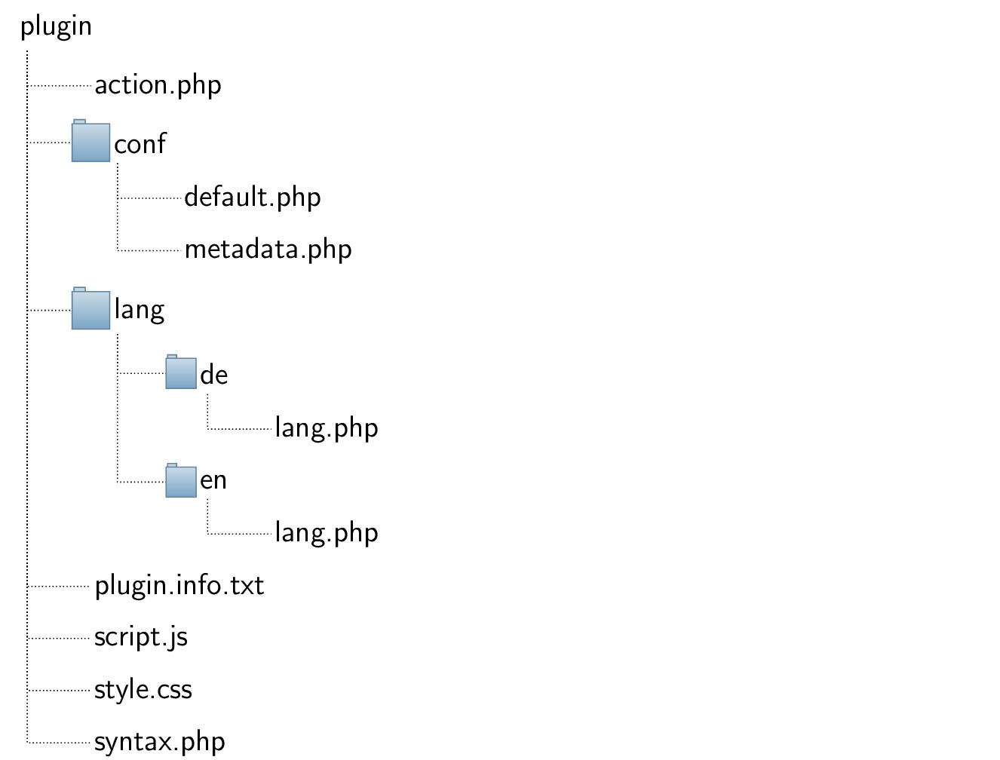
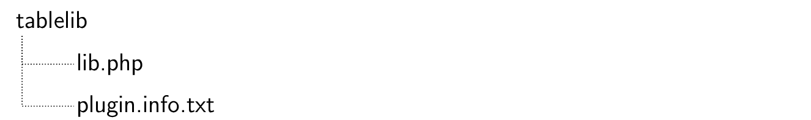
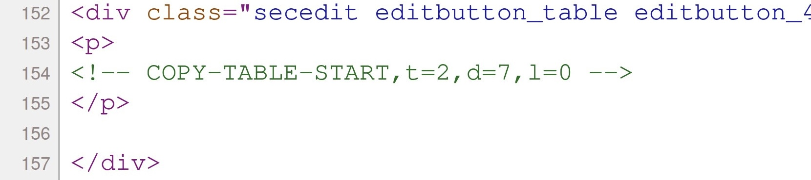
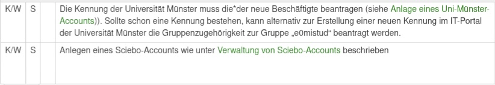

![[*]](crossref.png)
Contentstoc
zeigt die Startseite von Wikipedia.
==== Überschrift ====)
* für Aufzählungen, - für Nummerierungen)
[[Link]], {{Bild.png}})
**fett**, //kursiv//)
<code>, > für Zitate)
^ eingeleitet werden, kennzeichnen die Kopfzeilen. Zur Kombination mehrerer Zeilen, also vertikal verbundener Zellen, ist in der jeweiligen Zelle die Zeichenfolge ::: einzufügen.
Abbildung zeigt den Quellcode einer grundlegenden Tabelle mit vertikal verbundenen Zellen. Nach dem Generieren präsentiert Abbildung die vollständige Tabelle.
) mit spezifischen Plugins – erlaubt eine direkte Einbindung in bestehende Abfolgen und unterstützt
eine kontinuierliche Verbesserung gemäß ISO 13485, Kapitel 8.5.1 (Maßnahmen zur Verbesserung) [#!iso13485!#].
 |
).
 |
zeigt die Dateistruktur der TableLib-Bibliothek, die in Form eines DokuWiki-Plugins implementiert ist.
 |
<sign,n=x,d=y>
</sign>
<copy,t=z,d=y,l=b>
</copy>
</..>.
Mit dem Parameter x wird die Namensspalte, y die Datumsspalte, z der Tabellenindex für das Hinzufügen
der Reihe und l=0, l=1 oder l=2 für das optionale Löschen der zu kopierenden Reihe nach dem Kopiervorgang identifiziert. Alle Indizes beginnen bei 0. Eine Zahl bei l
größer als 0 gibt an, ob die Reihe nach dem Löschen erneut in die Kopiertabelle eingefügt werden soll.
Die Werte 1 oder 2 bestimmen die Position, an der dies erfolgen soll, nämlich entweder oben in der Tabelle (=1) oder unten (=2).
Da diese Syntax aber keine HTML-Sprache ist und dementsprechend nicht richtig angezeigt werden kann, wird sie durch das DokuWiki Syntax-Plugin Modul zu einem
HTML-Kommentar (siehe Abbildung ) substituiert, der an der gleichen Position ist und die vordefinierten Parameter beinhaltet.
 |
)
automatisch durch DokuWiki in die richtige Sprache übersetzt. Die entsprechenden Übersetzungen wurden zuvor in der jeweiligen lang.php-Datei
definiert und werden über den Parameter, hier 'copy_btn_txt' referenziert.
),
da die ::: Elemente nicht mehr existieren.
 |
), selbst wenn
die obere Zeile identische Spalteninhalte aufweist.
| |||||||||||||||||||||||||||||||||||||||||||||||||||||||||||||||||||||||||||||||||||||||||||||||
| P# | Überprüfung R# | Vorgehen | Erwartetes Ergebnis | ||
| P01 | R01, R02, R06 | Melden Sie sich im QMS-System als Admin ein und gehen Sie zu Admin/Erweiterungen verwalten.
- Fügen Sie das TableLib-Bibliothek Plugin als Plugin hinzu unter Manuell installieren, indem Sie die ZIP-Datei hochladen. - Fügen Sie das SignButton-Plugin als Plugin hinzu unter Manuell installieren, indem Sie die Zip hochladen. |
- Es sollte eine Nachricht mit: Das Plugin tablelib wurde erfolgreich installiert
angezeigt werden.
- Es sollte eine weitere Nachricht mit: Das Plugin signbutton wurde erfolgreich installiert angezeigt werden. |
||
| P02 | R03, R04, R05, R06, R07 | - Bearbeiten Sie eine DokuWiki-Seite wo eine Tabelle vorhanden ist, indem Sie auf: Diese Seite bearbeiten drücken.
- Fügen Sie vor einer DokuWiki-Tabelle mit mindestens 3 Spalten ein <sign,n=1,d=2> hinzu.
- Fügen Sie nach einer DokuWiki-Tabelle mit mindestens 3 Spalten ein </sign> hinzu.
- Drücken Sie auf Speichern, nachdem Sie beide Syntaxe hinzugefügt haben. |
- Neben jeder Reihe in der markierten Tabelle sollte rechts an letzter Stelle eine Schaltfläche zum Signieren sein.
- Wenn schon ein Datum in der Datumsspalte steht, sollte rechts neben der Reihe eine Rückgängig-Schaltfläche angezeigt werden statt der Schaltfläche zum Signieren. |
||
| P03 | R07, R10, R11 | - Drücken Sie jetzt in der ersten Reihe auf Signieren.
- Drücken Sie danach in der ersten Reihe auf Rückgängig. |
- In der Namensspalte sollte der Name vom gerade angemeldeten Benutzer stehen und in der Datumsspalte das aktuelle Datum.
- Nach dem Rückgängigkeitsdruck sollte die Namensspalte und die Datumsspalte leer sein. |
||
| P04 | R08, R09 | - Ändern Sie jetzt wieder die Syntax wie in P02 und fügen Sie unter n eine Zahl ein, die größer ist als die Spaltenanzahl der Reihe.
- Drücken Sie dann in der Reihe auf die Signieren-Schaltfläche. - Ändern Sie jetzt wieder die Syntax wie in P02 und fügen Sie unter n die richtige Namenspalte ein und unter d eine Zahl, die größer ist als die Spaltenanzahl der Reihe. - Drücken Sie dann in der Reihe auf die Signieren-Schaltfäche. |
- Es sollte die Fehlermeldung: Fehler: Namensspalte nicht gefunden angezeigt werden und sich nichts verändern.
- Es sollte danach die Fehlermeldung: Fehler: Datumsspalte nicht gefunden angezeigt werden und sich nichts verändern. |
||
| P05 | R05, R12 | - Ändern Sie in der Einstellung unter Admin/Konfiguration/Plugin SignButton das 'plugin signbutton date pattern' in ein falsches, xxxx.
- Gehen Sie wieder zur Seite, wo die Tabelle ist. - Drücken Sie in der ersten Reihe wieder auf Signieren, auch wenn da schon der Name und das Datum steht. |
- Es sollte die Fehlermeldung Fehler: Falsches Datumsformat angezeigt werden und sich nichts verändern. | ||
| P06 | R07 | - Melden Sie sich ab und melden Sie sich mit einem anderen Benutzer an, der keine Rechte hat, Seiten zu modifizieren.
- Führen Sie P03 wieder aus. |
- Sie sollten beide Male die Fehlermeldung: Fehler: Benutzer hat keine Berechtigung angezeigt bekommen. |
|
| |||||||||||||||||||||||||||||||||||||||||||||||||||||||||||||||||||||||||||||||||||||||||||||||||||||||||||||||||||
| P# | Überprüfung R# | Vorgehen | Erwartetes Ergebnis | ||
| P01 | R01, R02, R06 | Melden Sie sich im QMS-System als Admin ein und gehen Sie zu Admin/Erweiterungen verwalten.
- Fügen Sie das TableLib-Bibliothek Plugin als Plugin hinzu unter Manuell installieren, indem Sie die Zip hochladen. - Fügen Sie das CopyButton-Plugin als Plugin hinzu unter Manuell installieren, indem Sie die Zip hochladen. |
- Es sollte eine Nachricht mit: Das Plugin tablelib wurde erfolgreich installiert
angezeigt werden.
- Es sollte eine weitere Nachricht mit: Das Plugin copybutton wurde erfolgreich installiert angezeigt werden. |
||
| P02 | R03, R04, R06, R07 | - Bearbeiten Sie eine DokuWiki-Seite, wo zwei Tabellen vorhanden sind, indem Sie auf: Diese Seite bearbeiten drücken.
- Fügen Sie vor der ersten DokuWiki-Tabelle mit mindestens 3 Spalten in einer Reihe ein <copy,t=1,d=1,l=0> hinzu, wobei d=1 die Datumsspalte indexiert.
- Fügen Sie nach der ersten DokuWiki-Tabelle mit mindestens 3 Spalten ein </copy> hinzu.
- Drücken Sie auf Speichern nachdem Sie beide Syntaxe hinzugefügt haben. |
- Neben jeder Reihe in der markierten Tabelle sollte rechts an letzter Stelle eine Kopieren-Schaltfläche angezeigt werden.
- Wenn schon ein Datum in der Datumsspalte in der unteren Tabelle vorhanden ist, die mit t=z referenziert wurde, sollte rechts neben der Reihe eine Löschen-Schaltfläche angezeigt werden. |
||
| P03 | R07, R9, R10 | - Drücken Sie jetzt in der ersten Reihe auf Kopieren.
- Danach drücken Sie in der unteren Tabelle auf Löschen. |
- In der kopierten Reihe in der unteren Tabelle sollte in der Datumsspalte das aktuelle Datum stehen.
- Nach der Bestätigung sollte die Reihe aus der unteren Tabelle entfernt worden sein. |
||
| P04 | R08, R09, R10, R11, R12 | - Ändern Sie jetzt wieder die Syntax wie in P02 und ändern Sie t = 0, damit die Kopiertabelle die Einfügtabelle ist
- Drücken Sie dann in der Reihe auf die Signieren-Schaltfläche. - Ändern Sie jetzt wieder die Syntax wie in P02 und fügen Sie t = 1 ein und unter d eine Zahl die größer ist als die Spaltenanzahl der Reihe. - Drücken Sie dann in der Reihe auf die Signieren-Schaltfläche. - Ändern Sie jetzt wieder die Syntax wie in P02. Ändern Sie unter t = z die Zahl z die größer sein soll als die Anzahl der Tabellen. Dann ändern Sie d zu d=2. - Drücken Sie dann in der Reihe auf die Signieren-Schaltfläche. |
- Es sollte die Fehlermeldung: Fehler: Kopiertabelle und Einfügtabelle sind die gleichen angezeigt werden und sich nichts verändern.
- Es sollte danach die Fehlermeldung: Fehler: Datumsspalte nicht gefunden angezeigt werden und sich nichts verändern. - Zuletzt sollte die Fehlermeldung: Fehler: Wiki konnte nicht modifiziert angezeigt werden und sich nichts verändern. |
||
| P05 | R13, R16 | - Ändern Sie jetzt wieder die Syntax wie in P02 und ändern Sie n=0 (zu einem funktionierenden Wert) und d=1 (zu einem funktionierenden Wert) aber ändern Sie l, zu l=3.
- Drücken Sie dann in der Reihe auf die Signieren-Schaltfläche. |
- Es sollte die Fehlermeldung: Fehler: Falsche Eingabe angezeigt werden. | ||
| P06 | R08, R09 | - Ändern Sie jetzt wieder die Syntax wie in P02 und fügen Sie unter n und d funktionierende Werte ein wie in P05 und ändern Sie l zu 1.
- Drücken Sie dann in der Reihe auf die Signieren-Schaltfläche. - Gehen Sie dann runter zur unteren Einfügetabelle und bestätigen Sie auf die Schaltfläche: Löschen. |
- Die Reihe sollte in die untere Tabelle kopiert worden sein und unter der Datumsspalte sollte das aktuelle Datum stehen. Rechts neben der Reihe sollte die Löschen-Schaltfläche erscheinen.
- In der oberen Kopiertabelle sollte die Reihe gelöscht worden sein. - Nach der Bestätigung in der unteren Tabelle sollte die Reihe in der unteren Tabelle gelöscht worden sein und oben in der Einfügtabelle als erstes in der Tabelle eingefügt worden sein. |
||
| P07 | R08, R09 | - Ändern Sie jetzt wieder die Syntax wie in P02 und fügen Sie unter n und d funktionierende Werte ein wie in P05 und ändern Sie l zu 2.
- Drücken Sie dann in der Reihe auf die Signieren-Schaltfläche. - Gehen Sie dann runter zur unteren Einfügetabelle und drücken Sie auf die Schaltfläche: Löschen. |
- Die Reihe sollte in die untere Tabelle kopiert worden sein und unter der Datumsspalte sollte das aktuelle Datum stehen. Rechts neben der Reihe sollte die Schaltfläche: Löschen erscheinen.
- In der oberen Kopiertabelle sollte die Reihe gelöscht worden sein. - Nach der Bestätigung in der unteren Tabelle sollte die Reihe in der unteren Tabelle gelöscht worden sein und unten in der Einfügtabelle als letzte Spalte in der Tabelle eingefügt worden sein. |
||
| P08 | R05, R14 | - Ändern Sie in der Einstellung unter Admin/Konfiguration/Plugin CopyButton das 'plugin copybutton date pattern' in ein falsches, zum Beispiel xxxx.
- Gehen Sie wieder zur Seite, wo die Tabelle ist. - Drücken Sie in der ersten Reihe wieder auf Kopieren. |
- Es sollte die Fehlermeldung Fehler: Falsches Datumsformat angezeigt werden und sich nichts verändern. | ||
| P09 | R07 | - Melden Sie sich ab und melden Sie sich mit einem anderen Benutzer an, der keine Rechte hat, Seiten zu modifizieren.
- Führen Sie P03 wieder aus. |
- Sie sollten beide Male die Fehlermeldung: Fehler: Benutzer hat keine Berechtigung angezeigt bekommen. | ||
| P10 | R14, R15 | - Ändern Sie die Syntax wieder zu einer funktionierenden wie in P2, aber setzen Sie l=1.
- Drücken Sie dann auf Kopieren - Ändern Sie dann in der Syntax den Wert t zu t=10, also zu einem Wert der nicht zulässig ist. - Gehen Sie dann runter zur Hinzufügtabelle und drücken Sie auf die Schaltfläche: Löschen. - Ändern Sie dann die Syntax wieder um, indem Sie den Wert d=10 setzen, also zu einem nicht zulässigen Wert, aber t zu einem zulässigen Wert setzen, zum Beispiel 1. - Drücken Sie dann wieder auf Löschen. |
- Sie sollten unten bei der Hinzufügetabelle die kopierte Reihe mit dem aktuellen Datum in der Datumsspalte sehen. Rechts daneben sollte die Löschen-Schaltfläche sein.
- Nach der Änderung zu l=10 (einen nicht zulässigen Wert) sollte keine Lösch-Schaltfläche mehr rechts sein. - Nach der Änderung zu l=1 (einen korrekten Wert) und d=10 (einem nicht zulässigen Wert) sollte eine Lösch-Schaltfläche rechts neben der kopierten Spalte sein. - Nachdem Sie dann auf Löschen gedrückt haben, sollte die Reihe gelöscht und oben in der Kopiertabelle hinzugefügt worden sein. |
|